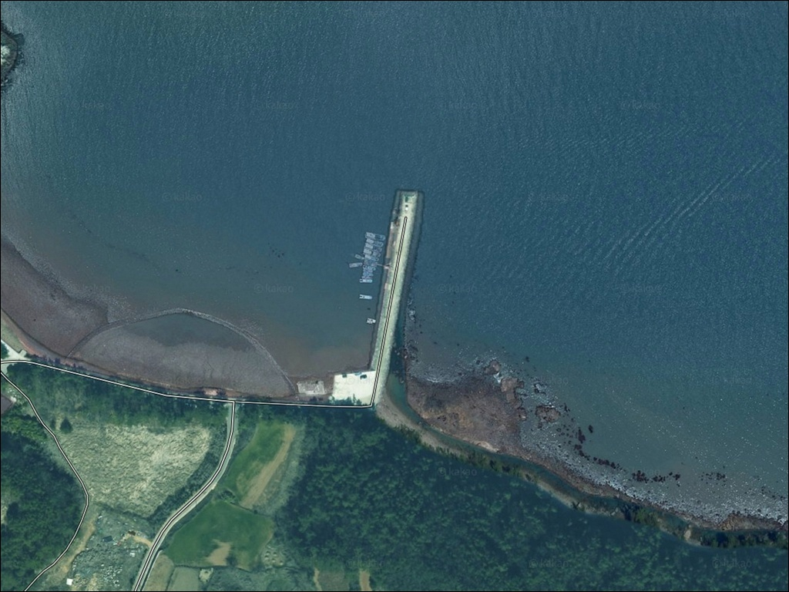
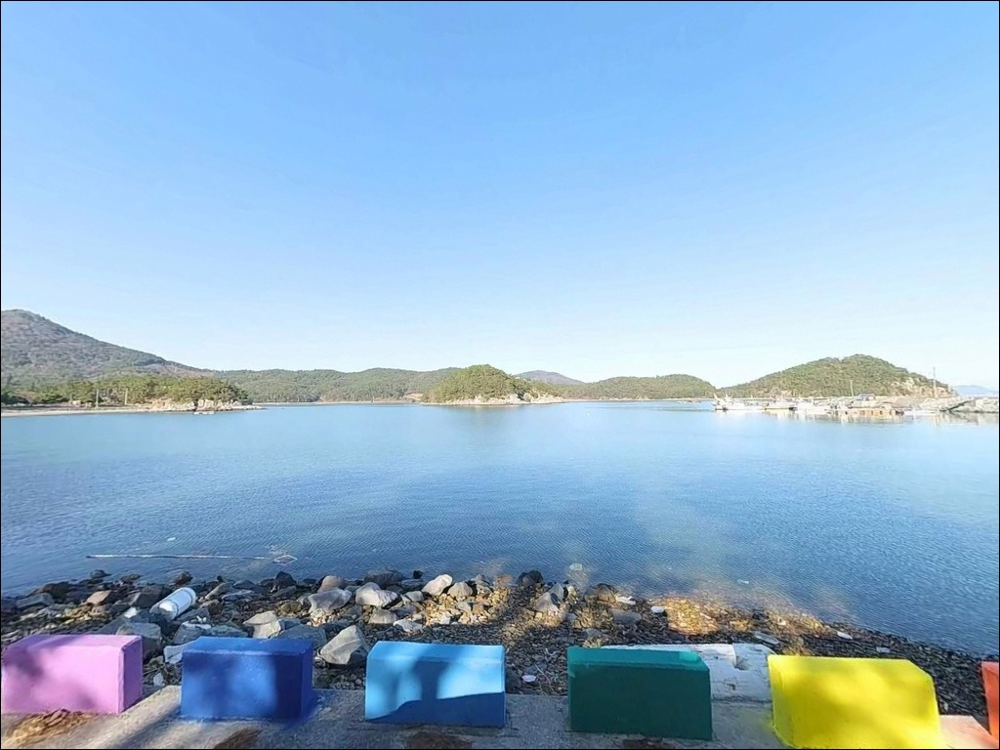
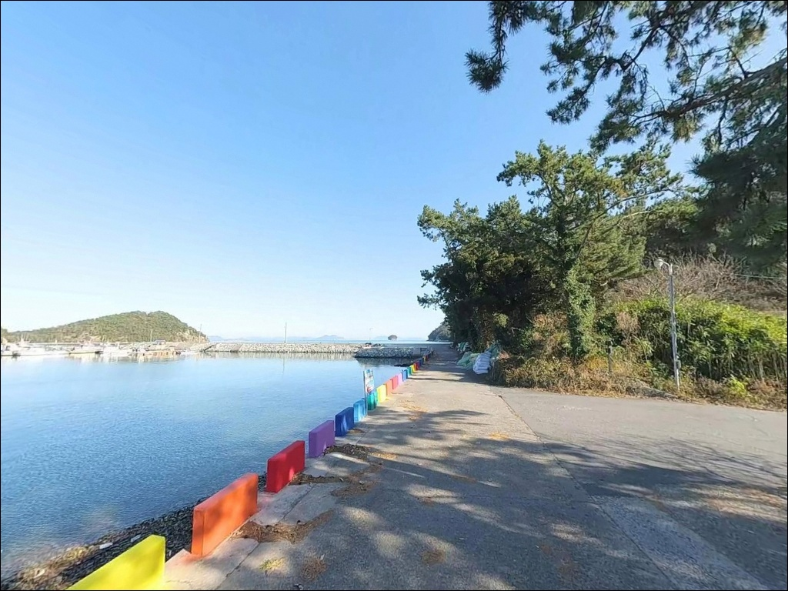
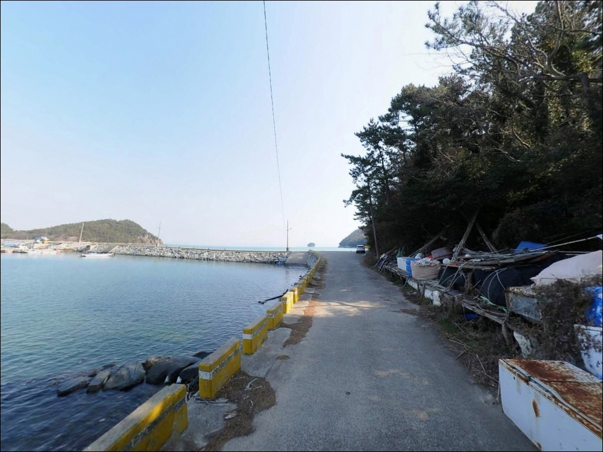
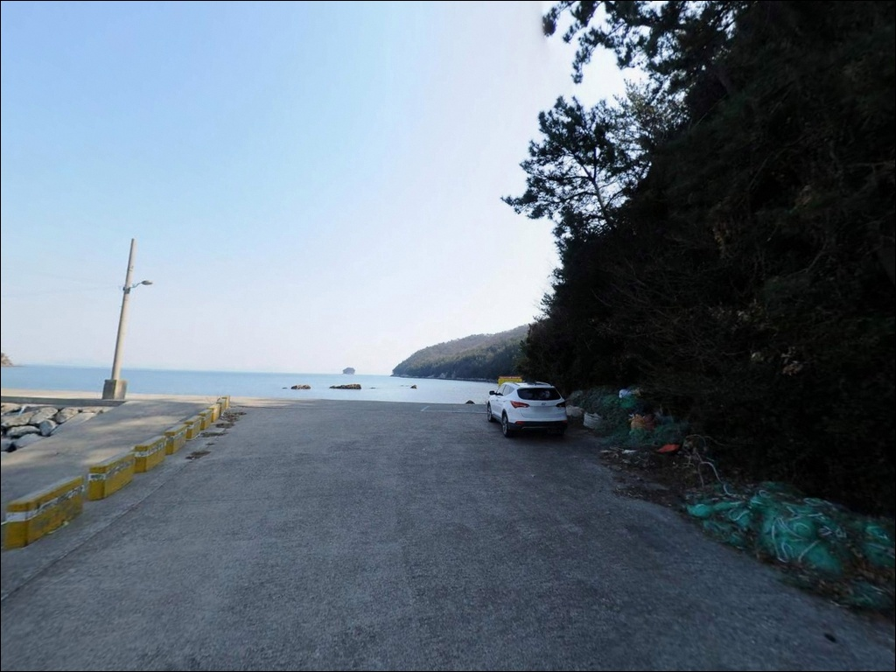
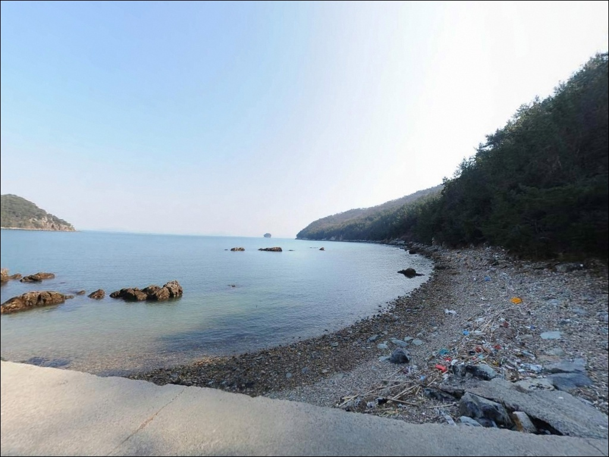
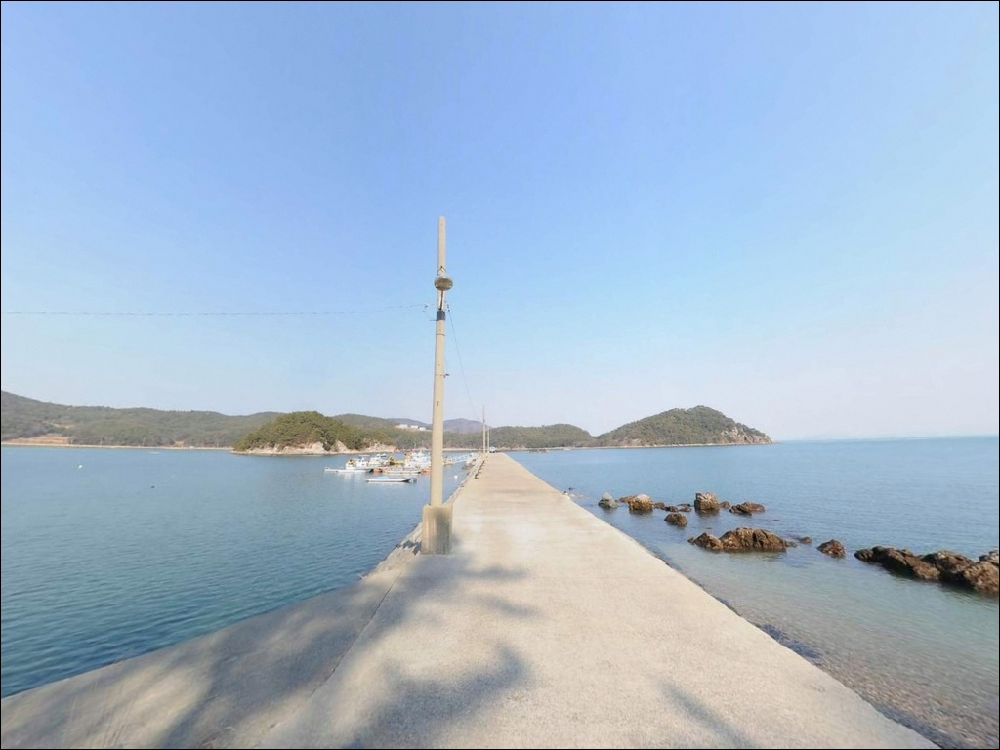
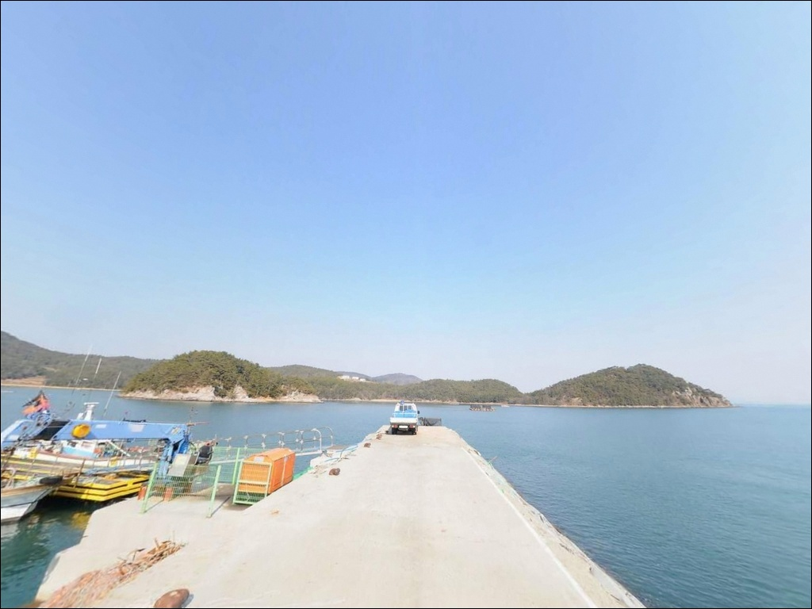
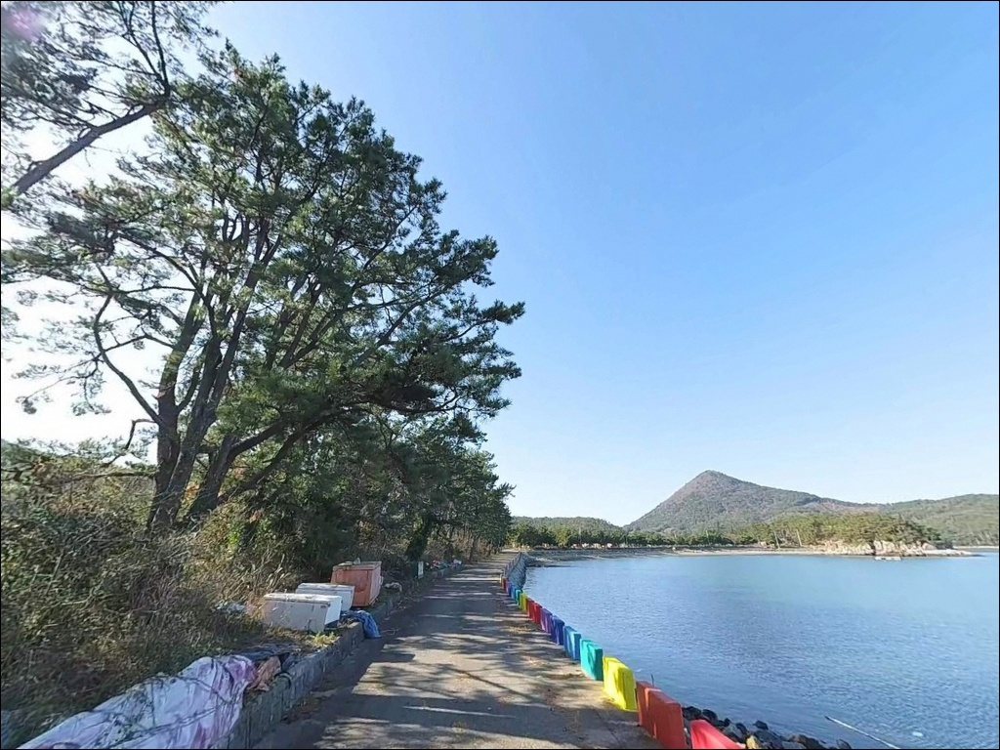

이 페이지에는 광고(제휴 링크 포함)가 있으며, 광고 링크를 통해 구매하면 운영자가 판매 수익 또는 수수료를 받을 수 있습니다. 포인트 사진: 카카오맵 스카이뷰·로드뷰. 이 페이지의 지도·사진 이미지는 카카오맵의 실제 서비스 이미지와 다를 수 있습니다.


백양방파제 찌낚시, 강한 들물 조류에서 수심 811m 공략에 쓴 고부력찌 채비
포인트 안내
백양방파제
전남 고흥군 동일면 백양리 산 142-1
들물 조류가 강한 날 가벼운 채비로
이 방파제 외항에 서면
채비가 흘러버려 낚시 자체가 어려워집니다.
방파제 끝단 수심이 만조 기준 8~11m에 달하고
외해와 직결된 조류가 직선으로 흘러드는 구조라,
물때와 채비 무게 선택이 이 포인트의 첫 번째 관문입니다.
내나로도 동쪽 끝단 해안선에 위치한 이 방파제는
외항 쪽에 테트라포트가 쌓여 있고
방파제 시작점 좌측으로 천연 갯바위 지형이 이어집니다.
감성돔 찌낚시 포인트로 알려진 구조이며,
가을철 갑오징어 에깅과 야간 볼락 루어까지
복수 낚시 방식을 운용할 수 있는 지형입니다.
이 글은 백양방파제의 진입 동선, 낚시 지형 여건,
물때 판단 기준, 차박 환경에 집중합니다.
조황 단정이나 특정 어종 보장은
이 글의 범위에 포함되지 않습니다.

1. 진입 동선과 포인트 접근 여건
내나로도는 나로1대교로 고흥 본토(포두면)와 연결되어 있어
육지에서 차량 진입이 가능합니다.
대교를 건너 백양리 방향 해안도로를 따라가면
백양마을에서 해안 끝까지 이어지는 단일 진입로가 나옵니다.
마을 진입로는 포장 구간으로 이어지며,
방파제 상단 폭이 넉넉해 승용차 진입과 끝단 회차가 가능한 구조입니다.
주차는 방파제 진입 전 우측 공터와
방파제 위 직선 구간에 일렬로 세우는 방식이 기본입니다.
공간이 어느 정도 여유 있어
차량 옆에 간소한 낚시 세팅을 펼치는 것도 가능합니다.
다만 어선 이동 동선을 막지 않는 자리를
먼저 확인하고 주차하는 것이 기본 매너입니다.
내나로도 본토 진입로인 나로1대교 접속 구간은
2차선 포장도로로 연결됩니다.
대형 SUV나 캠핑 트레일러 조합이라면
마을 안쪽 도로 폭을 위성지도로
사전에 확인하고 출발하는 편이 안전합니다.

2. 차박 환경과 야간 체류 여건
백양방파제는 방파제 곳곳에 가로등이 설치되어 있어
야간 낚시 여건이 고흥 일대 소형 방파제 중에서
좋은 편에 속합니다.
민가와 일정 거리를 두고 있어 야간에는 조용하며,
차량 통행이 거의 없는 한적한 환경이 만들어집니다.
방파제 위와 진입부 공터 공간이 넉넉하여
낚시를 마친 뒤 차박으로 이어지는 운용이 가능합니다.
외해 직결 구조상 기상에 따라
바람 영향을 직접 받는 날이 있으므로,
방파제 배면(내항 쪽)을 등지고
바람 방향을 먼저 파악하고 자리를 잡는 것이 중요합니다.
백양방파제는 나로도 권역 내에서
온라인에 많이 알려지지 않은 조용한 포인트입니다.
낚시 후 하룻밤 머무는 스텔스 차박 용도로
활용하기에 적합한 조건을 갖추고 있습니다.


3. 주변 편의시설 및 인프라 현황
백양방파제에서 가장 가까운 화장실은
백양마을 내 공중화장실로 방파제에서 약 600m 거리입니다.
동일면은 면소재지 기능이 있어
기본 행정시설이 마을 안에 갖춰져 있습니다.
차량으로 10분 거리의 동일면 소재지에
하나로마트와 낚시점이 있어
현장에서 부족한 채비를 보충할 수 있습니다.
출조 당일 아이스박스 얼음과 식수는
포두면이나 고흥읍에서 미리 챙겨 오는 편이 효율적입니다.
나로1대교를 건너 포두면 방향으로 나가면
편의점, 주유소, 마트급 인프라를 이용할 수 있습니다.
응급 상황 발생 시 고흥읍까지 차량 40~50분이 소요되므로
비상약품과 연료는 출발 전 여유 있게 준비하는 것이 기본입니다.

4. 방문 전 반드시 확인해야 할 조건
백양방파제 방문 전에 가장 먼저 확인할 것은 물때입니다.
외해와 직결된 구조로 조류 흐름이 강하고 방향이 직선적이어서,
사리 전후 들물 피크 타이밍에는
채비를 멀리 보내도 흘러버려 바닥 안착이 어렵습니다.
바다타임에서 동일면 기준 물때를 확인하고
조금 전후 또는 조류가 완만해지는 정조 타이밍을 노리는 것이
이 포인트의 기본 전략입니다.
감성돔 찌낚시를 주력으로 삼는다면
수심 8~10m 구간을 공략하는 반유동 채비가 맞습니다.
조류가 빠른 상황에서는 고부력찌로 교체하여
채비를 빠르게 안정시키는 방식이 유효합니다.
암반과 테트라포트가 혼재하는 지형이라
바닥층을 노리는 채비는 걸림에 대비해
여분 채비를 넉넉히 준비하는 편이 좋습니다.
외해 노출형 방파제는 기상 변화가 빠릅니다.
출발 당일 아침 기상청 풍속·파고 예보를
한 번 더 확인하는 습관이 헛걸음을 막는 조건입니다.
구명조끼 착용과 테트라포트 위 이동 시
펠트화 또는 핀부츠 착용은 이 포인트에서 필수입니다.

5. 외해 직결 지형이 만드는 낚시 여건
백양방파제의 지형적 핵심은
외해를 향해 길게 뻗은 일자형 구조에 있습니다.
방파제 끝단 외항 기준 만조 시 수심 8~11m의
깊은 구간이 형성되며,
방파제 시작점 좌측의 천연 갯바위 지형과 연결되어
포인트 확장성이 좋은 구조입니다.
외항 쪽 테트라포트와 암반이 혼재하는 지형은
어류의 은신처와 먹이 활동 구간이 겹치는 자리입니다.
방파제 끝단과 외항 직벽 구간에서
수심이 급변하는 구간이 형성되며,
이 구간이 찌낚시와 에깅 채비가 살아나는 핵심 자리입니다.
내항은 소규모 어선 정박 구조로
잔잔한 수면 조건을 활용하는 낚시에 어울립니다.
바닥은 암반과 모래가 혼합된 구조로
위치에 따라 채비 걸림 가능성이 있습니다.
테트라포트 경계면과 갯바위 사이 구간이
감성돔이 머물기 좋은 지형 조건을 갖추고 있습니다.
출조 전 백양방파제 일대 최신 조황은
꼭 직접 검색해 보시기 바랍니다.


6. 이 포인트에 어울리는 낚시 스타일
이 포인트의 지형 조건에 가장 잘 맞는 낚시는
감성돔 찌낚시입니다.
방파제 끝단 외항 기준 수심 8~10m 구간을
반유동 채비로 탐색하는 방식이 기본이며,
조류가 느려지는 정조 전후 타이밍에
외항 테트라포트와 갯바위 경계를 흘리는 방식이 어울립니다.
갑오징어 에깅도 이 포인트 지형 조건에 맞습니다.
외항 석축과 테트라포트 경계면, 방파제 측면 직벽 구간이
에기를 운용하기 좋은 수심과 지형을 갖추고 있습니다.
가을철(9~11월)이 갑오징어 에깅의 활성도가 높은 편이며,
시즌 중 내항 쪽에서도 주꾸미 반응이 나오는 구조입니다.
야간에는 방파제 가로등 주변에 베이트 피쉬가 모이면서
볼락 라이트게임을 노리기에 좋은 조건이 만들어집니다.
소형 지그헤드 채비로 가로등 빛 경계면과
테트라포트 그림자 구간을 탐색하는 방식이 유효합니다.
원투낚시는 외항 방향으로 장타를 보내
바닥 어종을 넓게 탐색하는 방식으로 운용합니다.

7. 대안 포인트와 플랜 B 동선
백양방파제 조류가 너무 강하거나
자리 여건이 여의치 않을 때
가장 먼저 이동할 대안은
나로도항 방파제(외나로도 신금항)입니다.
나로2대교를 건너 약 10km 거리이며,
수심 10m 안팎으로 깊고 진입·주차 여건이 안정적이어서
어떤 낚시 스타일로도 운용이 가능한 포인트입니다.
나로도항이 너무 붐비는 날에는
소록도 인근 방파제로 이동하는 선택도 있습니다.
외항 수심이 확보되어 있고
다양한 낚시 방식으로 공략이 가능한 구조입니다.
백양방파제를 처음 방문한다면
나로도항을 기점으로 삼고 백양방파제를 병행 탐색하는 동선이
이 권역에서 효율적입니다.
차박 대안으로는 동일면 덕흥해수욕장 주차장이 있습니다.
소나무 숲과 화장실이 갖춰진 안정적인 차박지로,
백양방파제 주차 공간이 부족하거나
바람 여건이 좋지 않을 때 대안으로 활용할 수 있습니다.

조류 세기를 이해하면
백양방파제가 달라 보입니다
감성돔 찌낚시나 갑오징어 에깅에 익숙한 낚시인이라면
백양방파제의 지형 조건은 잘 맞는 구조입니다.
수심 깊은 외항, 테트라포트와 갯바위 복합 지형,
야간 가로등까지 갖춰져 있어
복수 낚시 방식을 운용하기에 좋은 편입니다.
반면 물때 계산 없이 사리 전후에 진입하거나
채비 무게를 조류 세기에 맞추지 않으면
포인트 자체는 좋아도 낚시가 풀리지 않는 날을
맞닥뜨릴 수 있습니다.
물때 확인, 고부력 채비 준비, 진입로 사전 점검,
이 세 가지를 갖추고 간다면
조용하고 수심 있는 나로도 동쪽 포인트로
기억에 남는 출조가 됩니다.
온라인 정보가 적은 포인트인 만큼
낚시와 차박을 함께 즐기고 싶은 낚시인에게
직접 발품을 팔아볼 가치가 있는 외해형 방파제입니다.